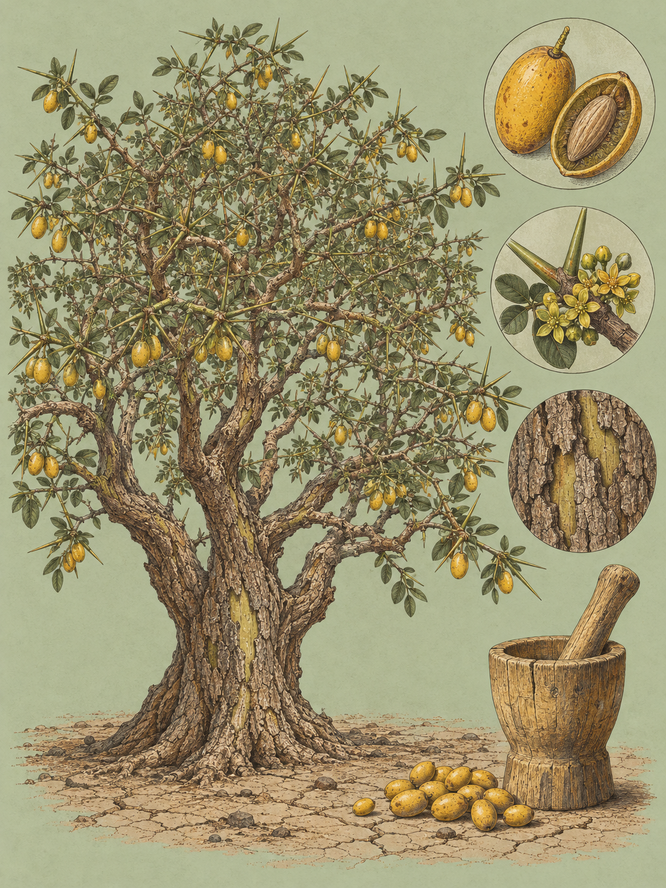

RIFT VALLEY
Balanites aegyptiaca
Swahili: „mchunju“. Maa: „Olamuriaka“. Kikuyu: „'Mukawa“. Kamba: „Mukawa“. Marakwet: „Ng'oswet“. Borana: „baddan, Dagams“. Luo: „Ochuoga“. Nandi und Kipsigis: „Lelgetwa, Legetetwet“. Amharisch: „bedena“. Arabisch: „lalob, hidjihi, inteishit, heglig (hijlij)“. Hausa: „aduwa“. Tamasheq: „taboraq“.

Am Ende der langen Trockenzeit trägt ein Baum im Rift Valley gelbe Früchte, wenn ringsum kaum etwas trägt. Er steht meist allein auf den alluvialen Ebenen in Seenähe oder vereinzelt an den Rändern der Abbruchkanten, kurzstämmig, tief gefurcht, mit einer Krone, durch die das Licht fällt. Ende September und Anfang Oktober, wenn die lange Trockenzeit endet und die kleine Regenzeit beginnt, erreicht die Wüstendattel ihren Frucht- und Laubhöhepunkt. Frisches grünes Laub und reife, saftige Früchte, genau dann, wenn Nahrung und Wasser in der Savanne am knappsten sind. Die Arten ringsum richten sich nach dem Regen. Dieser Baum tut es nicht, und das macht ihn für alles, was frisst und trinkt, zum Ankerpunkt.
Der Gattungsname kommt vom griechischen Wort für Eichel und zielt auf die Form der Frucht. Das Artepitheton verweist auf Ägypten, von dort stammten die Typus-Exemplare. Die erste wissenschaftliche Beschreibung und Illustration in Europa veröffentlichte der venezianische Arzt Prospero Alpini 1592, unter dem Namen 'agihalid'. Carl von Linné bearbeitete 1753 ägyptisches Material und reihte die Art als Ximenia aegyptiaca in seine Species Plantarum ein. Michel Adanson stellte sie später in eine eigene Gattung Agialid, die sich nicht durchsetzte. Der französische Botaniker Alire Raffeneau-Delile, Wissenschaftler in Napoleons Ägypten-Expedition, lieferte 1813 in der Description de l'Égypte die endgültige Neukombination als Balanites aegyptiaca und begründete damit die Gattung Balanites. In den Trockengebieten trägt der Baum in vielen Sprachen einen eigenen Namen, auf Swahili mchunju, auf Maa Olamuriaka. Was diese Wörter wörtlich bedeuten, ist nicht belegt.
Die Dornen werden bis zu acht Zentimeter lang, gerade, grün oder gelb, spiralförmig um die Äste gesetzt, und acht Zentimeter entsprechen der Länge eines durchschnittlichen menschlichen Zeigefingers. Die Borke ist dunkelbraun bis grau, tief längsgefurcht, mit rauen korkartigen Schuppen; die jungen Äste dagegen sind glatt und grün. Der Baum wird bis zu zehn Meter hoch, in Einzelfällen zwölf bis siebzehn, der Stamm misst dreißig bis fünfundvierzig Zentimeter im Durchmesser und verzweigt sich tief unten. Nach unten reicht eine Pfahlwurzel mehrere Meter, dazu laufen die Lateralwurzeln strahlenförmig aus. Die Blüten sind grünlich-gelb und klein, acht bis vierzehn Millimeter, sie stehen in Bündeln von drei bis fünf, sie duften, und sie sind zwittrig, männliche und weibliche Bäume gibt es nicht. Aus ihnen wird eine ellipsoide Steinfrucht von Pflaumengröße, grün und filzig, reif dann gelb bis hellbraun und kahl. Geblüht wird erst ab einem Alter von fünf bis sieben Jahren, das Ertragsmaximum liegt bei fünfzehn bis fünfundzwanzig, und alt wird so ein Baum mindestens hundert.
Die Frucht ist bitter, und die Bitterkeit hat einen Namen: Steroid-Saponine. Sie stecken in Stammrinde, Wurzeln, Fruchtfleisch und Samen, und sie sind der Grund, warum dieser Baum in der Tropenmedizin seit bald einem Jahrhundert eine Rolle spielt. 1933 untersuchte R. G. Archibald im Sudan die überlieferte Nutzung der Früchte als Fischgift und belegte erstmals wissenschaftlich, dass sich der Baum gegen die Bilharziose einsetzen lässt. Die Kette dahinter ist kurz. Pflanzenteile, insbesondere Fruchthüllen, Samen oder Rindenemulsionen, fallen ins stehende Wasser oder werden gezielt hineingegeben. Die wasserlöslichen Saponine, darunter die Balanitine, gehen in Lösung. Sie binden an die Sterole in den Zellmembranen der Süßwasserschnecken, verändern deren Durchlässigkeit und zerstören die Zellen im Atemepithel und in den weichen Geweben. Die Schnecke stirbt. Und ohne lebende Schnecken als Zwischenwirte entwickeln sich die Wimpernlarven der Schistosomen, die Mirazidien, nicht weiter zu den infektiösen Zerkarien, die sonst durch die Haut eines Menschen dringen, der im Wasser steht.
Wie stark das wirkt, ist gemessen. Ein Rohextrakt aus der Stammrinde tötete bei zehn Milligramm pro Liter fast alle untersuchten Schneckenarten vollständig, mit einer Ausnahme, der ausgewachsenen Biomphalaria pfeifferi. Für die ausgewachsene Bulinus globosus lag die mittlere letale Dosis bei 6,4 Milligramm pro Liter. Dass Saponine im Spiel sind, reicht als Erklärung allerdings nicht. Eine Struktur-Wirkungs-Studie stellte die Steroid-Saponine der Wüstendattel neben Triterpenoid-Saponine anderer Pflanzen, etwa aus Zygophyllum coccineum, und die waren wirkungslos. Es ist also kein allgemeiner Saponin-Effekt, sondern hängt an der Bauform: an Diosgenyl-Saponinen, deren Nicht-Zucker-Anteil als Diosgenin oder Yamogenin bestimmt wurde, mit Zuckerketten aus Rhamnose und Glucose daran. Und das Gift ist wählerisch. Es trifft Schnecken, Wasserflöhe, die Wirte des Guineawurms, und Fische, Säugetiere dagegen nicht im ganzen Körper: Das behandelte Wasser bleibt trinkbar, und die betäubten Fische bleiben unbedenklich zu essen. Harmlos ist der Umgang damit trotzdem nicht. Langzeitbeobachtungen aus der Côte d'Ivoire vermerken, dass Fischer, die den Extrakt fünf bis sechs Jahre lang ausbringen, Schäden am Sehvermögen erleiden.
Ein stiller Einzelgänger ist der Baum deshalb nicht, eher ein Treffpunkt. Die Blüten geben reichlich Nektar, den primär die Rossameise Camponotus sericeus einsammelt. Die Raupen des afrikanischen Schmetterlings Bunaea alcinoe fressen das Laub und kahlen ihn teils vollständig ab. Vögel und fruchtfressende Säugetiere nehmen das Fruchtfleisch und scheiden den harten Samen wieder aus oder würgen ihn hoch, und so wandert die Pflanze. Die Afrikanische Grasratte Arvicanthis niloticus klettert in der Trockenzeit eigens hinauf, um an das Wasser in den Früchten zu kommen. Der Honigdachs Mellivora capensis gräbt nach den Wurzeln und frisst, was heruntergefallen ist. Heuglins Gazelle Eudorcas tilonura scharrt in der Trockenzeit den Boden unter der Krone auf und legt sich in die kühle Kuhle. Nur die eigenen Sämlinge haben es schwer. Sie brauchen Licht und gehen im Schatten ein, weshalb sich der Baum in offener Savanne und an lichten Waldrändern verjüngt.
Was die Schnecken tötet, muss aus dem Essen heraus. Die Frucht ist essbar und stark bitter, geschätzt vor allem in ariden Regionen als Hungernahrung, weil der Baum auch in schweren Dürren fruchtet. Junge Blätter und Triebe kommen gekocht oder zerstoßen und in Fett angebraten als Gemüse auf den Teller. Der ölhaltige Samen wird intensiv abgekocht, bis die bitteren und giftigen Saponine ausgewaschen sind, und dann als Brei mit Sorghumhirse vermischt. Leicht ist das nicht: Der Steinkern macht fünfzig bis sechzig Prozent der Fruchtmasse aus, hellbraun, faserig, extrem hart. Wo der Baum steht, ist er Sand und schwerem Tonboden gewachsen, verträgt saisonale Überflutung, Buschfeuer und Vieh, und am größten wird er auf flachen Schwemmböden mit Anschluss an das Wasser unter der Erde.
Ende September steht er also da, auf der Ebene am See, gelb behangen, während die Trockenzeit ihren letzten Atem holt. Unter ihm liegt eine Gazelle in ihrer Kuhle, oben klettert eine Grasratte ins Geäst, und ein paar Früchte rollen in das flache Wasser am Rand, wo sie liegen bleiben und ihr Bitteres abgeben.
Gemeinschaften wie die Kikuyu, Kamba und Borana nutzen die Pflanze über die Küche hinaus. Ein Wurzeldekokt wird traditionell als Brechmittel (Emetikum) verwendet, in Suppen aufgekochte Wurzeln werden gegen Ödeme und Magenschmerzen eingenommen, Rindeninfusionen gegen Sodbrennen und teilweise gegen Malaria, und das Holzharz wird mit Maismehlbrei vermischt auf Schmerzen im Brustkorb aufgetragen. Im Labor zeigten wässrige und ethanolische Rindenextrakte deutliche antioxidative Eigenschaften, und weil sie bei Ratten die glatte Muskulatur der Prostata entspannten, werden sie auf ihr Potenzial gegen die gutartige Prostatavergrößerung untersucht. Das Holz ist blassgelb, hart und langlebig. Der kurze, gefurchte Stamm macht es dem Sägewerk schwer, lokal lässt es sich gut hobeln und drechseln, und daraus werden Werkzeuggriffe, Joche, Mörser, Stößel, Hocker und Kämme. Als Brennholz liefert es 4.600 Kilokalorien je Kilogramm und bleibt beim Verbrennen nahezu rauchfrei, was Feuerstellen im Inneren einer Hütte möglich macht. Leere Samenkerne werden im Sudan und in Ostafrika zu Hals- und Gebetsketten aufgezogen oder als Spielsteine für das Brettspiel Warri benutzt. Überliefert gilt der Baum oft als Quelle des „Zachum-Öls“ und wird mit dem biblischen „Balsam von Gilead“ in Verbindung gebracht. In ägyptischen Gräbern der 12. Dynastie liegen seine Fruchtsteine als Votivgaben, vor mehr als 4.000 Jahren dorthin gelegt. Die IUCN führt die Art als nicht gefährdet; ihre Dornen machen sie zum lebenden Zaun um Viehhürden.
Wo und wann: Auf den alluvialen Ebenen am Lake Baringo, dazu Naivasha, Nakuru und Hell's Gate, wo die Bäume meist einzeln in Seenähe oder an den Abbruchkanten stehen. Ende September und Anfang Oktober hängen die reifen gelben Früchte, ein Ansitz an einem tragenden Baum verspricht dann eine hohe Ereignisdichte: anfliegende Fruchtfresser, kletternde Grasratten, Gazellen, die im Schatten einen Ruheplatz suchen. Vermutlich am besten in den ersten zwei Stunden nach Sonnenaufgang und den letzten vor Sonnenuntergang, weil die Mittagssonne in die tief gefurchte Rinde harte, unstrukturierte Schatten wirft.
Brennweite: 150 bis 600 für Vögel in der lichten Krone und für den Honigdachs bei großer Fluchtdistanz, für kleine Singvögel im An- und Abflug zwischen den Dornen 1/1250 s bis 1/2000 s. 100 bis 400 für ruhende Gazellen unter dem Baum, dort genügen 1/250 s bis 1/500 s. 45 mm für die acht bis vierzehn Millimeter kleinen Blüten und die korkartige Rinde, mit Stativ und etwa 1/100 s, solange kein Wind in den Blättern steht. 26 bis 60 für das Habitat.
Bild-Idee: Die Grasratte im Geäst, zwischen den geraden grünen Dornen, eine gelbe Frucht im Bild: der Baum als Wasserstelle für ein Tier, das nicht trinkt, sondern klettert.